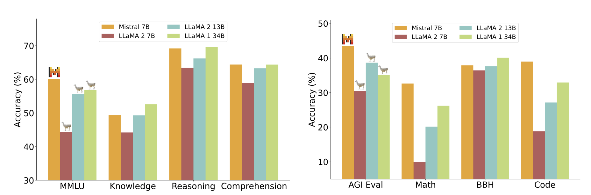
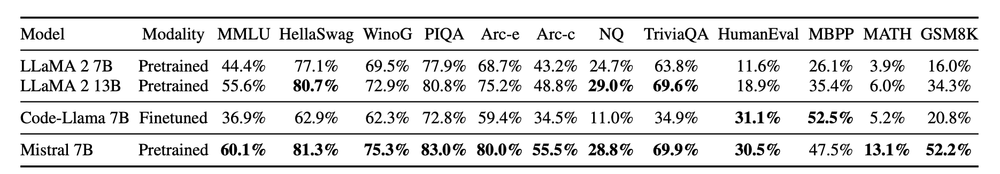
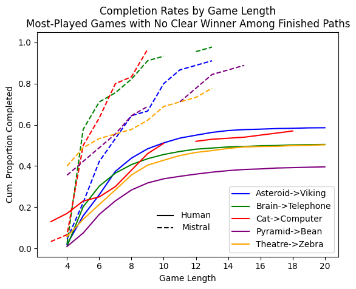

LLMs are trained on extremely large corpuses of texts, most of the time written by humans over decades. This enables them to generate human-like sentences and reply to questions in a sound way. But how closely do they adopt human ways of thought? Would an LLM play a game involving semantic relationships the same way humans do? Would they play it better?
To answer these questions, we enlist an LLM as a participant in Wikispeedia, a game wherein players navigate from one Wikipedia page to another using as few clicks on page links as possible (click [here] to play). We then compare the LLM’s results to human results, considering in particular speed, completion rates, strategic use of Wikipedia pages with many links, progression towards goal over time, and location of clicks on the page. Our findings contribute to a societal question more pressing in the past year than perhaps any time in human history: (when) will AI overtake humans’ ability to think creatively?
Before broaching the subject of our LLM and prompt, we had to decide which game pairs – our moniker for Start Page->End Page combinations – we would later ask the LLM to play (we cannot ask an LLM to play all due to computational limitations). Much of this decision relies on Wikispeedia data generated by humans. Thankfully, we can access 76,193 human-selected Wikispeedia game paths provided by EPFL’s dlab. Take a look at the distribution of human attempts for game pairs in this dataset:
A stunning majority of pairs have been attempted less than 10 times! Clearly, when selecting game pairs for our LLM to play, it would not do to choose a random subset, as we need to choose pairs with multiple human attempts in order to make meaningful comparisons. We decide instead to select the 75 game pairs which humans have attempted 20 or more times for the LLM’s game pair set.
To ensure selecting this subset does not compromise the generalizability of our findings, we explore how the distribution of page categories represented as start or end pages changes between the global dataset and our 75-game-pair subset. These two distributions are visualized in the following flowcharts:
We find that there is noticeable but not disruptive variation in the top 8 categories represented both as start pages and end pages between games paths found in the global set and subset. This makes sense, as by isolating the most popular game pairs, we are retaining the game types that constitute the bulk of the global dataset. Still, close inspection reveals some discrepancies: geography and everyday life see their representation shrink, while science and people – already two of the largest categories – grow their shares. While we are further concentrating the games played into select initially large categories with our chosen subset, we are still optimisitc about the generalizability of our results below due to the persistence of healthy mix between the primary categories. We note also that the share of games in non-top-8 categories is stable at about 30%.
We end this section by providing a look at the most popular pages visited across human page paths:
As with game attempts, pages visits are rather concentrated among a select few pages. In fact, these 20 pages account for nearly 7% of clicks across the thousands of pages in all human Wikispeedia data. Such pages are known as hubs, meaning they have many outgoing and incoming Wikipedia links (we call the number of outgoing links “degree”). The concept of a hub will become important in our analysis later; for now, we move to a discussion of how we selected our LLM and prompt to generate data from 75 game pairs.
Undertaking this project meant deciding which LLM we would ask to play Wikispeedia. This is not a simple choice. On the one hand, we needed a model trained on enough parameters to be able to consistently react appropriately to a series of Wikispeedia prompts, else we would not be able to programmatically generate AI-completed game paths.
OpenAI’s ChatGPT fits the bill. On the other hand, we’ve neither funding nor research-grade computational power, precluding use of OpenAI’s API at scale. Our economic and computational restrictions encouraged us to limit the scope of LLM candidates to those which are (1) publicly available on the HuggingFace repository and (2) trained with 13B
parameters or less. After consulting the HuggingFace leaderboard, we focused on the following two models:
Despite LlaMA-13B’s parameter advantage, Mistral-7B could more consistently respond appropriately to our prompts (see prompt details below). This was the case in particular for each model’s instruct version, which refers to the model variant trained to follow instructions. Mistral’s relative success is in line with research outcomes as well, such as the following set of benchmarks from Jiang, Albert Q., et al. 2023 [arXiv]:
  But successful AI-generated Wikispeedia data depends on our prompt as well as our model. We spent considerable time developing a prompt architecture that emulates the Wikispeedia game experience as a result.
In general, we find that small changes in our prompt yielded different answers and game paths for a given game pair. This is because even if large language models can demonstrate outstanding performance on question-answering tasks, both limited size and sequential responses can compromise this ability. Following literature review and several QA rounds with prompt variants, we opted for the following chain-of-thought prompt architecture with one shot learning:
Note that in the prompt above, TARGET refers to the goal of a Wikispeedia game pair and LIST OF LINKS refers to the links available on a given Wikipedia page. LIST OF LINKS changes in each round of the game. TARGET does not.
To be clear, our prompt does not fully emulate the options available to human Wikispeedia players. In particular, Mistral is not given the option to revert to previous pages, nor is it given the option to abandon a game. We also maintain a blacklist in each game to ensure Mistral does not choose any link more than twice. Our testing determined that these compromises were necessary in order for Mistral to make continued responses that respected the bounds of our game.
In fact, despite elaborate prompt testing and tuning, we still found that Mistral would occasionally respond with answers not available in the list of links. To solve this, we use LMQL, a coding language developed by ETH Zürich’s SRIlab lab which allows us to specify constraints on Mistral’s output – namely, that it choose an option from our provided set of links. For more information on this library, we suggest the following set of documents [docs] which is all-encompassing and easy to follow.
With our LLM and prompt in place, we launched a pipeline that asked Mistral to play all the Wikispeedia game pairs which human players tried 20 or more times. At 30 attempts each for 75 game pairs, we create 2,250 AI-generated game paths total for our novel dataset. Note that not all of these games were completed, as we aborted any games in which Mistral had failed to reach the goal by round 30.
Now for the part we've all been waiting for: comparing Mistral data to human data!
Our first route of investigation stems from the rather natural and universal question of whether AI can outperform humans in tasks requiring critical thought. To answer this in the realm of Wikispeedia, we first process Mistral’s prompt responses so they conform to the structure of preexisting, human-derived Wikispeedia data. We then drop all games where the human player quit or the Mistral game was aborted due to our 30-page maximum permittance (which we established to reduce computation time) and calculate average human game length and average Mistral game length for each game pair. Average absolute game length is but one metric for success; alternatives include average game length with back-clicks excluded or with corrections for dropout. Because (1) the former metric is rather similar to absolute length (see West, Robert and Leskovec, Jure 2012 [link]), (2) we address dropout rates later in this analysis, and (3) absolute length is perhaps the only truly applicable metric for Mistral given our prompt architecture, we feel justified in using absolute length for our chief comparison.
Plotted below are these average absolute game lengths alongside 95% confidence intervals. Game pair labels rendered bold exhibit a statistically significant difference in average game length between humans and Mistral. Note that game pairs are sorted by the difference in average game length, meaning the higher the game pair appears in the chart, the faster the average human performance is relative to Mistral.
Those who spend unpaid manhours clicking through Wikipedia links for fun need not worry: the balance of game length – or speed - appears to be in humans’ favor. Across the 75 game pairs we had Mistral play (but not necessarily finish) 30 times each, just 5 show Mistral beating humans’ average speed with statistical significance. Humans, meanwhile, trump Mistral in 29 game pairs – nearly 40% of the set. What’s more, the scale of humanity’s wins is often larger than Mistral’s, as humanity can claim the top 19 highest-magnitude speed differentials. This is all to say that if you select a random game pair, humans are more likely than Mistral to be speedier at it, and when humans win, they win big.
We formalize our finding that humans are generally the speedier Wikispeedia player on a global scale through a t-test on game length across matched observations. If HFi is the number of finished human game paths for game pair i, and MFi is the number of finished Mistral game paths for game pair i, we sample min(HFi,MFi) observations from both human and Mistral data for each game pair i, match human observations to Mistral observations using game pair, take the difference in each pair’s game length, and perform a t-test for difference from 0 on the global set of these differences. We find humans use approximately one page less to reach their target in the matched set, a result that is significant at the 99% confidence level (t-stat: -8.78, p-val: 3.84x10-18).
We should note that speed is not the only metric for measuring performance. Completion rate is an important metric as well. After all, what good is a talented athlete if he or she quits halfway through every game? Below, we report the cumulative proportion of games completed over time by both Mistral and humans in the top 5 most-played games without a clear speed-based winner. Above, these games were a wash. Notice now how completion rates paint a different picture:
Clearly, Mistral has greater follow through in these game pairs than humans do. Perhaps drawn toward certain game pairs by perceived ease (Brain -> Telephone) or interesting pages (Cat->Computer, because who doesn’t love cats?) only to realize the game pair is more cumbersome than initially believed, humans appear prone to abandon attempts. Mistral, meanwhile, doesn’t have this freedom under our current prompt; it can only ‘abandon’ a game when it has made too many traversals or engaged in too many cycles. That it isn’t forced to abandon more games under these conditions suggests it is perceived difficulty rather than actual difficulty (which would take the form of exclusively non-semantically-intuitive paths toward the goal) that encourages humans to quit. Mistral is immune to the demoralizing effect of this perception, and is a stronger player for it.
The reason behind differences in completion rates is immediately intuitive. Less so the reason behind differences in speed. We thus turn our focus toward understanding why humans tend to be faster than Mistral among completed game paths.
Much has been made of the zoom-out to hub, zoom-in to goal strategy employed by humans in Wikispeedia (see West, Robert and Leskovec, Jure 2012 [link]). The essence of this strategy is to spend one turn finding a page general enough that it contains outgoing links to many broad topics, after which the Wikispeedia player can readily find a master category they are reasonably confident will contain their eventual goal. Without this strategy, it may be cumbersome to navigate oneself into the realm in which the goal belongs, especially if it is quite distinct from the origin. A select few hubs were shown in the discussion of game pair selection above.
Below, we average the degree (or number of outgoing links) of pages visited at each stage of 3-, 4-, 5-, 6-, 7-, and 8-step games to investigate whether this strategy is used by both human (left) and mistral (right):
Across all game lengths, humans navigate immediately to high-degree pages, reaching their chief hub after at most two turns. This is only the case for Mistral during a couple of its shorter games. Indeed, as game length increases, we see that the so-called “hub” may be reached by Mistral only as late as the penultimate round. The erratic nature of high-degree page location means Mistral does not adopt humans’ preferred strategy in a standardized way, and that when game paths are longer, it is not orienting itself quickly into a realm of pages which can propel it toward its goal. These results are compounded by tight 95% confidence intervals along human paths and no such tightness on Mistral paths.
One potential reason Mistral is not as capable of utilizing the zoom-out to hub, zoom-in to goal strategy employed by humans is our prompt. The set of links may change, the goal may change, but one thing is always stable: Mistral should select the option “most similar” to the ultimate goal. If Mistral is following these instructions, page navigation should always decrease semantic similarity to goal provided the list of options makes it possible. This could fly in the face of a zoom-out strategy if finding a hub means a temporary decrease in semantic similarity.
Using spaCy’s medium-sized web-trained English embeddings, we embed all Wikipedia page titles, calculate cosine similarity between current page and goal along all our Wikispeedia game paths, and average similarity to goal at each step of 2-, 3-, 4-, and 5-round games for human paths and Mistral paths separately (note that unlike in the preceding two graphs, moving left along the x-axis in these two graphs implies moving closer to the Wikispeedia goal page):
We see that, on average, humans (left) use their first move to take a non-negligible semantic step away from the goal. This is very likely a byproduct of the famed zoom-out to a hub strategy, and it persists across all game lengths. Mistral, meanwhile, only exacts a semantic step away from the goal in the first round of 5-round games – and a rather minor one at that. Even if we do not explicitly say semantic similarity in our prompt, the result is clear: a singular focus on word meaning blinds Mistral to other strategies and the preferred, winning strategy of humans in particular.
But why is it the case that semantic similarity on its own infrequently yields a worthwhile hub? After all, it is reasonable to assume that in a game like Cat->Computer, the starting page is so distinct from the goal that the best available option for semantic similarity would also be rather general and, as a result, high in degree. To address this question, we close our analysis with a look at link location.
Previous ADA teams, such as the 2022 team ADA & The Lovelaces, have reported on the human tendency to select links at or near the top of a Wikipedia page. But Mistral is entirely blind to a link’s location on a Wikipedia page. In fact, in theory, Mistral should be blind to a link’s location inside the alphabetized lists we provide in our successive prompts. What, then, would it look like if we observed Mistral’s selections based on the geometric location of the Wikipedia page links? If we mapped Mistral’s “clicks” to the proper Wikipedia pages, in other words?
Using the python implementation available in the ADA & The Lovelaces public git repo, we visualize below the location of clicks made by humans in our selection of 75 games (left) and, for Mistral, the location clicks would have occurred at if Mistral’s selections were unchanged but the game was played on actual Wikipedia pages (right). Please note that the specific heatmaps below do not appear in any previous report: the lefthand graph is isolated to just our 75-game set and the righthand graph is generated from Mistral data.
Immediately visible is the continued bias toward links at the top of the page. Our prompt lists are sorted alphabetically, decoupling our prompt from links’ geometric location. This means the Mistral heatmap likely reflects the greater incidence of links at the top of Wikipedia pages in general. Beneath the top, however, differences arise. Mistral is much more likely to “click” a link between y-coordinates 1000 and 3000. Furthermore, errant and semi-bright bulges toward the bottom of page confirm Mistral’s outlier click clusters are further down the page than humans’.
We believe this has implications for Wikispeedia outcomes. While Mistral’s location blindness ensures it has the opportunity to select the most semantically similar word even if it’s far down the page, as we have discussed above, the requirement that Mistral must prioritize semantic similarity above all else is perhaps a hindrance to speed. This is especially true if links further down the page are less likely to be hubs. To determine whether this was the case, we retained all human clicks across our 75 games, classified them according to whether they occurred at y coordinates lower than 1000 or higher than 1000 - our threshold for 'top of page' - and calculated the probability a given link appeared to the human player at the top of a page (we take the probability because the same link may appear at different locations on different pages). Below is the CCDF of degree (# outgoing page links) for pages likely to be linked high on a page versus pages unlikely to be linked high on a page:
The fact that pages likely to be linked high on a page exhibit a consistently higher curve in the plot above means higher links are more likely to house high-degree Wikipedia pages, or hubs. To see why this conclusion should hold even if the difference in CCDFs is low, consider that the data is in some sense ‘matched’: humans considered every click in the distribution worthwhile. Such a uniform degree advantage to higher links in this context is notable.
Mistral is already not explicitly searching for hubs. Add to this restriction the ‘bait’ of a low-degree but more semantically similar link further down the page, and it is easy to see how Mistral might get caught pursuing less lucrative page paths. Ultimately, our LLM appears to have also suffered from its lack of knowledge on how the underlying paths it is traversing are structured.
In summary: humans win this round, but they played under different rules. Researchers with more computational and financial power may yet devise a prompt architecture that allows a given LLM to both decouple its objective from semantic similarity and understand the structure of Wikipedia link placement as humans do. When that day comes, we would not be so quick to bet money on humans.